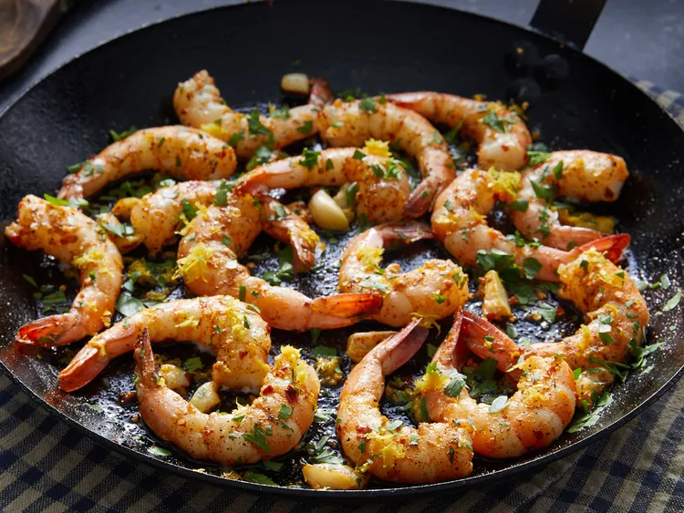

Lemon Garlic Shrimp

Lemon-garlic shrimp is a delicious appetizer that's perfect to throw together before a last-minute party. Or, serve this fresh, citrusy seafood over rice or pasta and make it a main dish on a busy weeknight when you're short on time.
Ingredients
- Olive oil
- 16 large shrimp
- 3 cloves of garlic
- Lemon juice
- Freshly chopped parsley
Steps
- Gather all ingredients
- Heat oil in a large pan
- Add shrimp until are bright pink
- Add remaining ingredients and simmer for 5 minutes